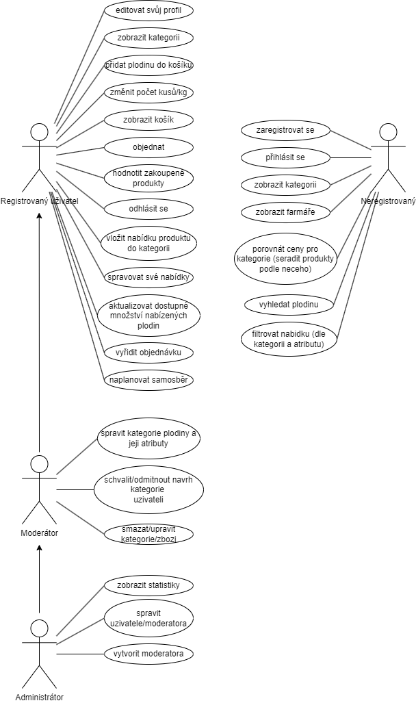
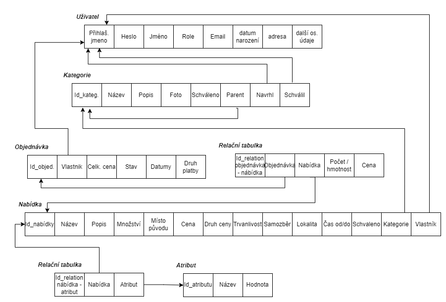

| Login | Heslo | Role |
|---|---|---|
| adminZT@example.com | qwer1234 | Admin |
| jantichy@gmail.com | qwer1234 | Moderátor |
| jan33@example.com | qwer1234 | Farmář |
| johndoe@example.com | qwer1234 | Farmář |

Projekt je implementován pomocí Laravel frameworku a zahrnuje aplikační vrstvu (PHP), databázovou vrstvu (SQL) a prezentační vrstvu (Blade šablony v HTML). Následuje stručný popis implementace jednotlivých klíčových use-casů a jejich propojení s částmi projektu.
Uzivatel)index(),
create(),
store(),
validate(),
show(),
update(),
destroy()
uzivatele/index.blade.php - zobrazení seznamu uživatelů.uzivatele/create.blade.php - vytvoření nového uživatele.uzivatele/edit.blade.php - úprava konkrétního záznamu uživatele.uzivatele/manage.blade.php - správa všech uživatelů.uzivatele/show.blade.php - zobrazení konkrétního záznamu uživatele.Kategorie, Atribut)index(),
create(),
store(),
show(),
update(),
destroy()
kategorie/index.blade.php - zobrazení seznamu kategorií.kategorie/create.blade.php - vytvoření nové kategorie.kategorie/edit.blade.php - úprava konkrétního záznamu kategorie.kategorie/manage.blade.php - správa všech kategorií.kategorie/show.blade.php - zobrazení konkrétního záznamu kategorie.index(),
create(),
store(),
show(),
update(),
destroy()
nabidky/index.blade.php - zobrazení seznamu všech relevantních nabídek pro danou roli.nabidky/create.blade.php - vytvoření nové nabídky.nabidky/edit.blade.php - úprava konkrétního záznamu nabídky.nabidky/manage.blade.php - správa všech relevantních nabídek.nabidky/show.blade.php - zobrazení konkrétního záznamu nabídky.index(),
create(),
store(),
show(),
update(),
destroy(),
updateForFarmer()
objednavky/index.blade.php - zobrazení seznamu relevantních objednávek.objednavky/create.blade.php - vytvoření nové objednávky.objednavky/edit.blade.php - úprava konkrétního záznamu objednávky.objednavky/manage.blade.php - správa všech objednávek.objednavky/show.blade.php - zobrazení konkrétního záznamu objednávky.index(),
create(),
store(),
show(),
update(),
destroy(),
objednavky/index.blade.php - Seznam hodnocení.objednavky/create.blade.php - vytvoření nového hodnocení.objednavky/edit.blade.php - úpravování hodnocení.objednavky/manage.blade.php - správa všech relevantních hodnocení, pro daného uživatele.objednavky/show.blade.php - zobrazení konkrétního záznamu hodnocení.DBserver.sql obsahuje definice tabulek a relací.
phpmyadmin na školním serveru..env pro nasazení projektu,
společně s nastavením pro databázi.node_modules, vendor a tests,
a následného nahrání souboru na server.public na požadované umístění
a byl spuštěn příkaz php83 $(which composer) install --optimize-autoloader --no-dev.phpmyadmin.phpmyadmin..env pro připojení k databázi.php composer install nainstalovat potřebné moduly.php artisan serve na localhostu.Nevíme o žádném známém problému.